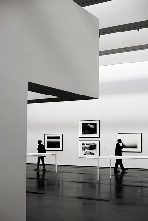

The tour will knock your socks off!
I was very impressed with the exhibition! The guided tour is educative, the art pieces are beautiful and the gift shop is great. I will definitely come back soon with my family!
H. Peterson - 14/03/2022
The Truly Wild Art Gallery was founded in 2016 by Mama Lione. Located in Wild St. 485, the gallery receives many modern art lovers everyday. The exhibitions are always evolving and our staff is constantly searching for new pieces to provide the ultimate Modern Art Experience. We might come from the wild but this is no monkey business, every piece is authentic.
With over 50 art pieces, 15 different themed sections and a spacious structure, it is appropriate for visitors of all ages and we have entertainment for the whole family. The gallery also has its own restaurant ran by Kevin Bark, one of the most renowned chefs in the Animal Kingdom and winner of many awards. Our history speaks for itself, come meet our staff and enjoy the exhibition!
I was very impressed with the exhibition! The guided tour is educative, the art pieces are beautiful and the gift shop is great. I will definitely come back soon with my family!
H. Peterson - 14/03/2022
The gallery is organized and clean. The art is top notch and very distinct. However you have to be careful with your food; the monkey kept stealing my son's snacks! I had to leave early because he wouldn't stop crying.
Sarah Gullivan - 12/03/2022
The tour was so good, very educative and the art is amazing. Loved the food in the restaurant, even though the monkey kept watching my plate. The staff's intern is the cutest thing you'll ever meet, I'm completely in love!
Carey Planck - 12/03/2022
Founder, CEO
Mama Lione is responsible for keeping the Gallery running and the staff from eating all the food in the restaurant.
Art Researcher
John is our art researcher, responsible for finding and bringing (legally, we hope) the most valuable art pieces to the exhibitions. Some visitors have complained that John steals food, but nothing was ever proven.
Exhibit Organizer
Melvin is the glue that keeps the exhibitions together. With his impressive stature, he can reach and organize any art piece with only moderate losses and accidents.
Chef
Kevin is our restaurant's chef. A food lover since he was little, Kevin is one of the most renowned chefs in the animal kingdom and a very good boy.
Head of Security
Brick is our Head of Security and does not play around (unless he finds a mouse, then he just can't help it).
Art Intern
Mickey is our art intern. One of his functions is to greet every visitor, which he does passionately. As for the art stuff, Mickey is still learning to not chew the art pieces. He'll get there. One day.
Wild St. 485 - Animal Kingdom, Earth